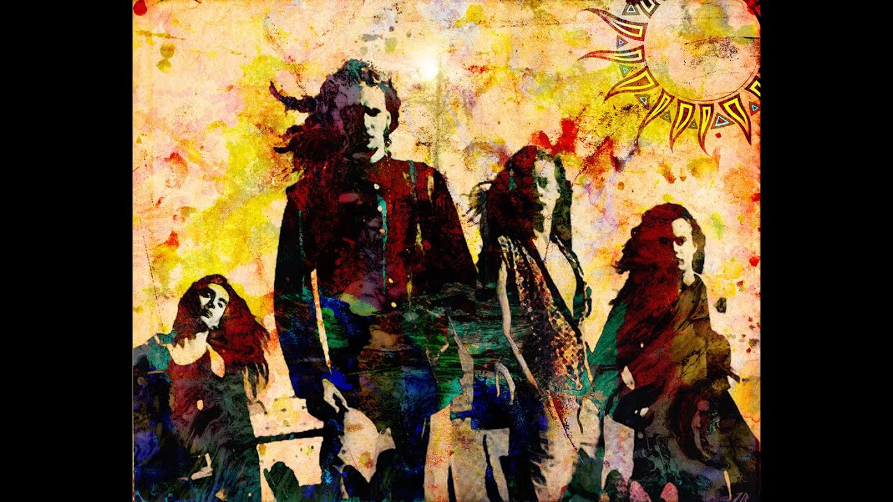

Alice in Chains
Alice in Chains (often abbreviated as AIC) is an American rock
band from Seattle, Washington, formed in 1987 by guitarist and
vocalist Jerry Cantrell and drummer Sean Kinney, who later
recruited bassist Mike Starr and lead vocalist Layne Staley. Starr
was replaced by Mike Inez in 1993. William DuVall joined the band
in 2006 as co-lead vocalist and rhythm guitarist, replacing
Staley, who died in 2002. The band took its name from Staley's
previous group, the glam metal band Alice N' Chains.
